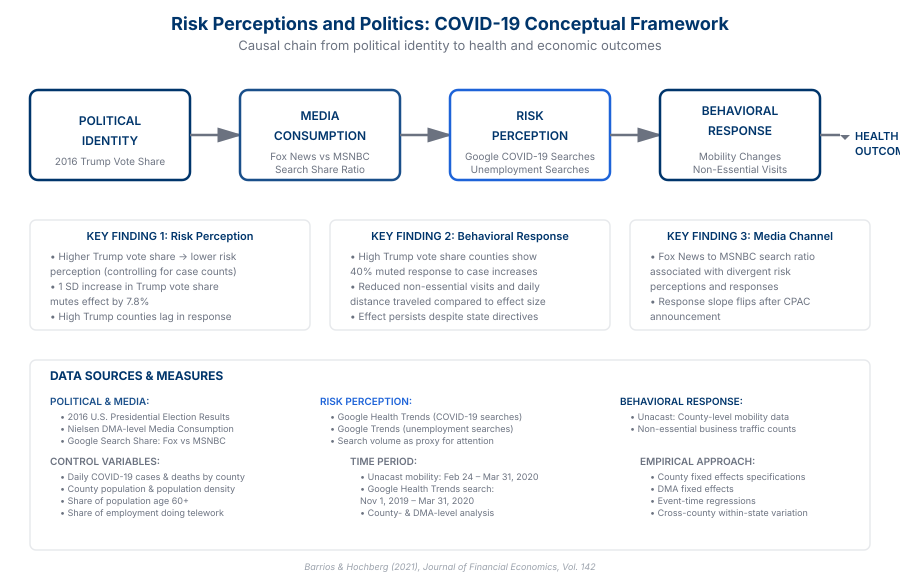

Abstract
We examine how political partisanship shaped perceptions of COVID-19 health risks and influenced compliance with public health recommendations during the early stages of the pandemic. Using individual-level mobility data, survey responses, and county-level political affiliation, we document stark partisan differences in risk perceptions and behavior that emerged early and persisted throughout the pandemic's first wave.
We find that Republican-leaning counties showed significantly lower reductions in mobility and social distancing compared to Democratic-leaning counties, even after controlling for local COVID-19 case counts, demographic factors, and economic conditions. These behavioral differences align with survey evidence showing Republicans consistently perceived lower personal health risks from the virus. The partisan gap in both risk perceptions and behaviors widened following polarizing political messaging and media coverage.
Conceptual Framework
The paper traces a causal chain linking political identity to pandemic behavioral responses. Political affiliation (measured by 2016 Trump vote share) influences media consumption patterns, which shape risk perceptions captured through Google Health Trends searches, ultimately driving differences in mobility and business visit patterns. These behavioral divergences have measurable public health consequences.

Figure 2: Causal chain showing how political identity shapes pandemic behavioral responses through media exposure and risk perception. The framework integrates multiple data sources including 2016 election results, Google Trends search behavior, Unacast mobility data, and COVID-19 case counts.
Key Findings
Partisan Risk Perception Gap
Republicans perceived significantly lower health risks from COVID-19 than Democrats, with this gap emerging early and widening over time, independent of local infection rates.
Behavioral Divergence
High Trump vote share counties showed significantly lower reductions in average daily distance traveled (6.7% reduction vs 9.3% reduction in low Trump vote share counties) and fewer visits to non-essential businesses, even controlling for local outbreak severity.
Media Amplification
The partisan gap in risk perceptions and behaviors widened following polarizing political rhetoric and divergent media coverage across partisan news outlets.
Health Consequences
The behavioral differences correlated with subsequent COVID-19 case and death rates, suggesting that political polarization had real public health costs.
Main Results
The paper's core findings reveal stark partisan differences in behavioral responses to COVID-19. Using county-level data and controlling for local case counts and demographic characteristics, the authors document significant interactions between Trump vote share and social distancing behavior.

Figure 1: The response to confirmed COVID-19 cases was significantly muted in high Trump vote share counties. While low Trump vote share counties reduced daily distance traveled by approximately 6.5% for each log increase in confirmed cases, high Trump vote share counties reduced distance by only about 3.5%—a 46% reduction in the social distancing response. Similar patterns held for visits to non-essential businesses.